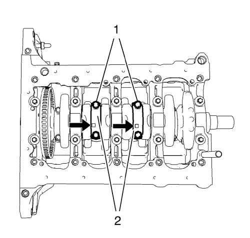
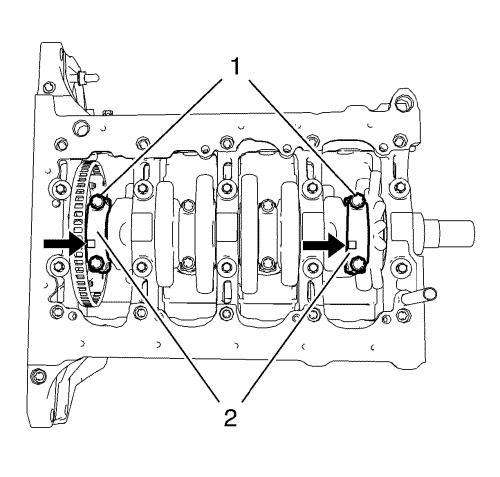
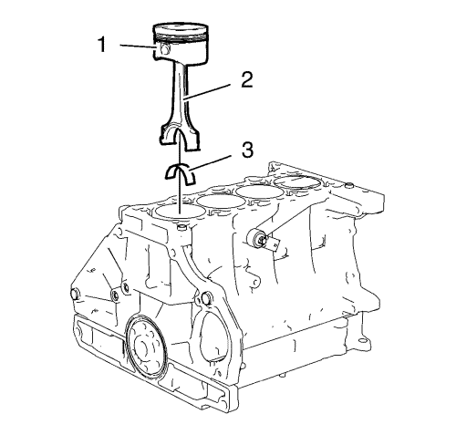
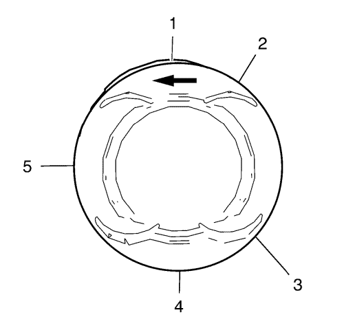
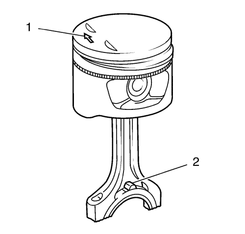

Sustitución de pistón, biela y cojinete
Herramientas especiales
EN-470-B Llave de apriete angular
Si desea informarse sobre herramientas regionales equivalentes, consultar Herramientas especiales .
Procedimiento de desmontaje
- Abra el capó.
- Retire la culata. Consulte Sustitución de la culata → 1.4L LUH y LUJ.
- Elevar el vehículo y soportarlo de manera segura. Consultar Elevación y soporte en alto del vehículo .
- Desmonte el cárter de aceite. Consulte Sustitución del cárter de aceite → 1.4L LUH y LUJ.

Nota: Marque la posición de montaje de los sombreretes de cojinete de biela. Los cojinetes de biela y los sombreretes de cojinete no deben intercambiarse con los de otras bielas.
- Desmonte y DESECHE los 4 tornillos deñ sombrerete de cojinete de biela (1) de los cilindros 2 y 3.
- Desmonte los 2 sombreretes de cojinete de biela (2) y los 2 cojinetes de biela de los cilindros 2 y 3.
- Gire el cigüeñal 180°.

- Desmonte y DESECHE los 4 tornillos deñ sombrerete de cojinete de biela (1) de los cilindros 1 y 4.
- Desmonte los 2 sombreretes de cojinete de biela (2) y los 2 cojinetes de biela de los cilindros 1 y 4.

- Desmonte los 4 pistones (1) y bielas (2) y los 4 cojinetes de biela superior (3) del bloque motor.
Procedimiento de montaje
- Para el procedimiento de limpieza y revisión, consultar Limpieza e inspección de pistones, bielas y cojinetes → 1.4L LUH y LUJ.
- Monte el pistón y la biela nuevos. Consulte Ensamblado del pistón y la biela → 1.4L LUH y LUJ.

- Ajuste las juntas de los segmentos de pistón del siguiente modo:
| 3.1. | Segmento de compresión superior (1) |
| 3.2. | Segmento de compresión inferior (4) |
| 3.3. | Segmento de aceite (2) o (3) |
| 3.4. | Distanciador de segmento de aceite (5) |

- Las flechas (1) de la cabeza del pistón deben señalar al lado de la distribución.
- Las marcas de las bielas (2) deben señalar al lado del cambio.
- Lubrique los segmentos de pistón, el pistón, la superficie del diámetro interior del cilindro y un compresor de segmentos del pistón con aceite de motor limpio.
- Monte el compresor de segmentos del pistón para comprimir los segmentos de pistón.
- Monte los pistones (1) junto con las bielas (2) y los cojinetes superiores de biela (3) en el bloque motor y en el cigüeñal.
Nota: La parte más ancha (flechas) de los sombreretes de cojinete de biela debe quedar hacia el lado del cambio. Los sombreretes de cojinete de biela deben montarse en su posición original.
- Monte los 2 cojinetes de biela y los 2 sombreretes de cojinete de biela (2) de los cilindros 1 y 4.
Precaución:Consulte Precaución con las fijaciones en la sección Prólogo.
Precaución:Consulte Precaución de la fijación del par angular y estiramiento en la sección Prólogo.
- Monte los 4 tornillos NUEVOS de sombrerete de cojinete de biela (1) y apriételos en la siguiente secuencia:
| 10.1. | Apriete los pernos de los sombreretes de cojinete de la biela a 25 N·m (18 lib. pie). |
| 10.2. | Apriete los pernos del sombrerete del cojinete de biela otros 25°. Utilice la llave EN-470-B. |
- Gire el cigüeñal 180°.
Nota: La parte más ancha (flechas) de los sombreretes de cojinete de biela debe quedar hacia el lado del cambio. Los sombreretes de cojinete de biela deben montarse en su posición original.
- Monte los 2 cojinetes de biela y los 2 sombreretes de cojinete de biela (2) de los cilindros 3 y 2.
Precaución:Consulte Precaución con las fijaciones en la sección Prólogo.
- Monte los 4 tornillos NUEVOS de sombrerete de cojinete de biela (1) y apriételos en la siguiente secuencia:
| 13.1. | Apriete los pernos de los sombreretes de cojinete de la biela a 25 N·m (18 lib. pie). |
| 13.2. | Apriete los pernos del sombrerete del cojinete de la biela otros 45°. Utilice la llave EN-470-B. |
- Monte el cárter de aceite, vea Sustitución del cárter de aceite → 1.4L LUH y LUJ.
- Bajar el vehículo.
- Monte la culata. Consulte Sustitución de la culata → 1.4L LUH y LUJ.
- Cierre el capó.
| © Copyright Chevrolet. All rights reserved |